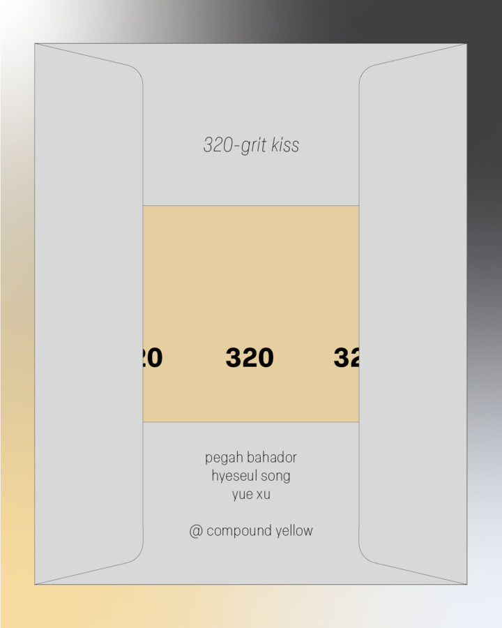

Closing Reception: 320 Grit Kiss
Saturday, January 31, 2026
2:00 PM 6:00 PM
New works by:
Pegah Bahador
Hyeseul Song
Yue Xu
On display through February 28th
In 320-grit Kiss Pegah Bahador, Hyeseul Song, and Yue Xu, have organized the space to reflect on desire, tactility and surface. Including drawings, photographs, sculptures and installations, they explore desire as an immanent assemblage that slides along skins, images, screens and inscriptions. Many of the pieces are gathered as temporal arrangements that are packable or emphasize mobility through sites, and therefore study surface as time.